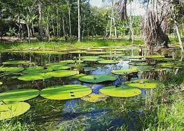

| El amazonas y sus especies |
| Pagina sobre la importancia del amazonas |
| Introduccion |
|
El Amazonas, conocido como el pulmón del planeta, representa un tesoro invaluable de biodiversidad y recursos naturales. Esta vasta selva tropical, ubicada en América del Sur, alberga una riqueza sin igual de flora y fauna, así como una serie de servicios ecosistémicos vitales para la salud del planeta. Desde su papel en la regulación climática hasta su contribución a la medicina y la cultura indígena, el Amazonas despliega una trama de importancia que abarca múltiples dimensiones. Este texto explorará profundamente la trascendencia del Amazonas en el panorama global, destacando su papel crucial en el equilibrio ecológico y su relevancia para la sostenibilidad de nuestro mundo. En el corazón de la exuberante selva amazónica, un frágil equilibrio se encuentra en peligro. Los últimos años han presenciado un cambio alarmante en el ecosistema amazónico, con señales preocupantes de colapso vinculadas al impacto del cambio climático. Esta región vital, que alguna vez fue una sinfonía de vida y biodiversidad, se enfrenta a un futuro incierto debido a una combinación de factores destructivos. La deforestación, que ya ha consumido una parte significativa del bosque amazónico, junto con la creciente frecuencia de incendios, ha exacerbado la vulnerabilidad de este vasto ecosistema. Al adentrarnos en la exploración de estos desafíos, es evidente que la intervención y la toma de medidas urgentes son cruciales para proteger el corazón verde de nuestro planeta. La urgencia de conservar el Amazonas destaca la importancia de crear conciencia sobre su valor. Este ecosistema diverso es vital para el equilibrio climático y el bienestar de diversas especies, incluyendo a los humanos. A pesar de los desafíos como la deforestación y el cambio climático, la concienciación motiva la acción. Este texto explora cómo el entendimiento de la fragilidad del Amazonas impulsa movimientos de preservación y educación, forjando un camino hacia un futuro sostenible para este recurso y las futuras generaciones.En esta pagina web mostraremos la importancia de la selva amazonica para nuestro planeta y esperamos generar mas conciencia sobre este tema. |